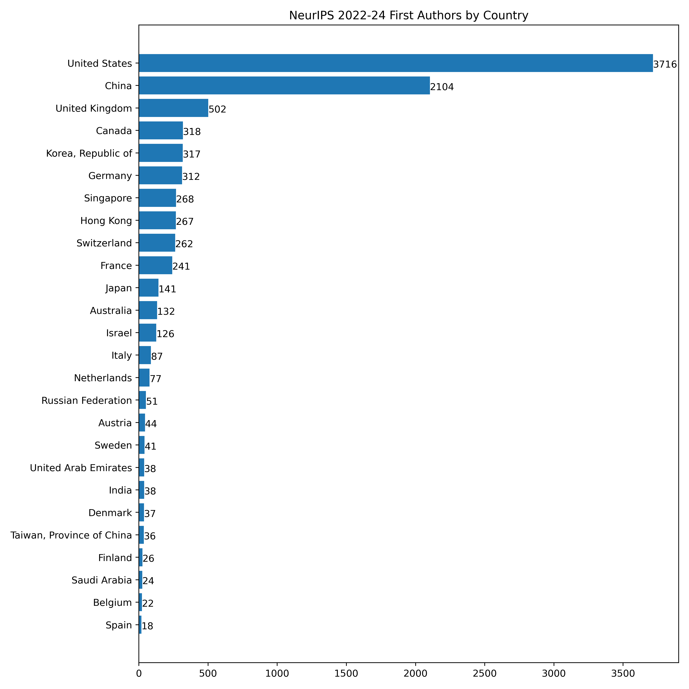
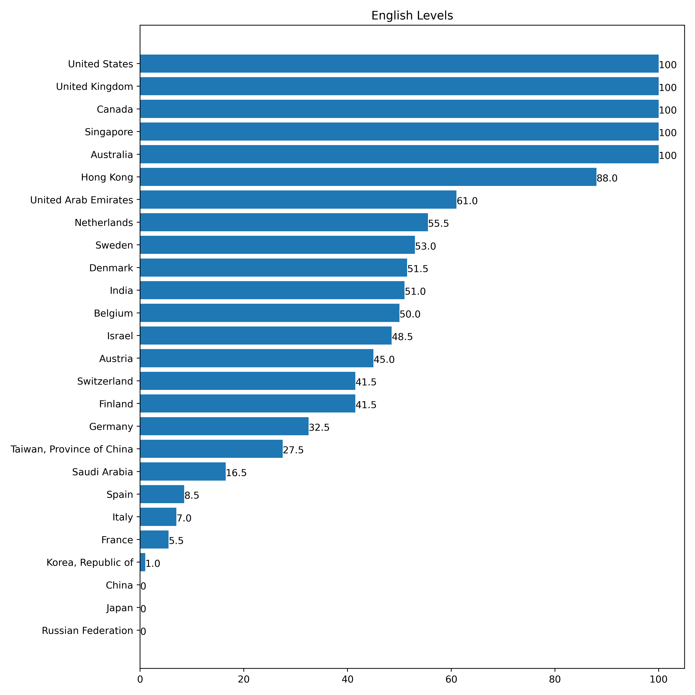

英語で生活できるAI先進国は?
Rei Sato1. 近年のNeurIPSファーストオーサーが所属する機関の所在国
NeurIPSは機械学習分野を代表するトップカンファレンスであり，採択論文やその著者の所属機関がOpenReviewで公開されている．
2022-24の採択論文のファーストオーサーの，2025年1月時点での最新所属機関を取得した．
この所属機関がどの国に所在するかをChatGPTに繰り返し問い合わせ，最初に2回以上同じ回答を得られた時点でその国を所在国として集計した．
所属機関に所在国を登録しているケースが5346件あり，このうち94.5%がChatGPTの推論と一致したことから，十分な精度があると考えられる．

[('United States', 3716, 'US'), ('China', 2104, 'CN'), ('United Kingdom', 502, 'GB'), ('Canada', 318, 'CA'), ('Korea, Republic of', 317, 'KR'), ('Germany', 312,
'DE'), ('Singapore', 268, 'SG'), ('Hong Kong', 267, 'HK'), ('Switzerland', 262, 'CH'), ('France', 241, 'FR'), ('Japan', 141, 'JP'), ('Australia', 132, 'AU'),
('Israel', 126, 'IL'), ('Italy', 87, 'IT'), ('Netherlands', 77, 'NL'), ('Russian Federation', 51, 'RU'), ('Austria', 44, 'AT'), ('Sweden', 41, 'SE'), ('United Arab
Emirates', 38, 'AE'), ('India', 38, 'IN'), ('Denmark', 37, 'DK'), ('Taiwan, Province of China', 36, 'TW'), ('Finland', 26, 'FI'), ('Saudi Arabia', 24, 'SA'),
('Belgium', 22, 'BE'), ('Spain', 18, 'ES')]01_openreview.py ，02_gpt.py ，03_plot.py を使用した．
2. 英語の浸透度
ChatGPTに上記の国を(1)明らかに英語だけで生活できる=1ポイント，(2)明らかに英語だけでは生活できない=0ポイント，(3)その中間=0.5ポイント，の3クラスに分類させる．
100回の問い合わせによる合計ポイントを以下に示す．

[('United States', 100, 'US'), ('United Kingdom', 100, 'GB'), ('Canada', 100, 'CA'), ('Singapore', 100, 'SG'), ('Australia', 100, 'AU'), ('Hong Kong', 88.0, 'HK'),
('United Arab Emirates', 61.0, 'AE'), ('Netherlands', 55.5, 'NL'), ('Sweden', 53.0, 'SE'), ('Denmark', 51.5, 'DK'), ('India', 51.0, 'IN'), ('Belgium', 50.0, 'BE'),
('Israel', 48.5, 'IL'), ('Austria', 45.0, 'AT'), ('Switzerland', 41.5, 'CH'), ('Finland', 41.5, 'FI'), ('Germany', 32.5, 'DE'), ('Taiwan, Province of China', 27.5,
'TW'), ('Saudi Arabia', 16.5, 'SA'), ('Spain', 8.5, 'ES'), ('Italy', 7.0, 'IT'), ('France', 5.5, 'FR'), ('Korea, Republic of', 1.0, 'KR'), ('China', 0, 'CN'),
('Japan', 0, 'JP'), ('Russian Federation', 0, 'RU')]04_eng_gpt.py ，05_plot.py を使用した．
3. 結論
以下の16ヶ国が英語で生活できるAI先進国であると考える．
United States, United Kingdom, Canada, Singapore, Australia, Hong Kong, United Arab Emirates, Netherlands,
Sweden, Denmark, India, Belgium, Israel, Austria, Switzerland, Finland